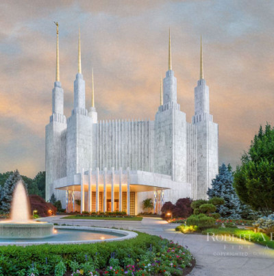

Washington DC Temple
The Washington DC Temple was dedicated by Spencer W. Kimball from November 19–22, 1974, becoming the 16th operating temple on the earth today.
The Washington DC Temple was dedicated by Spencer W. Kimball from November 19–22, 1974, becoming the 16th operating temple on the earth today.